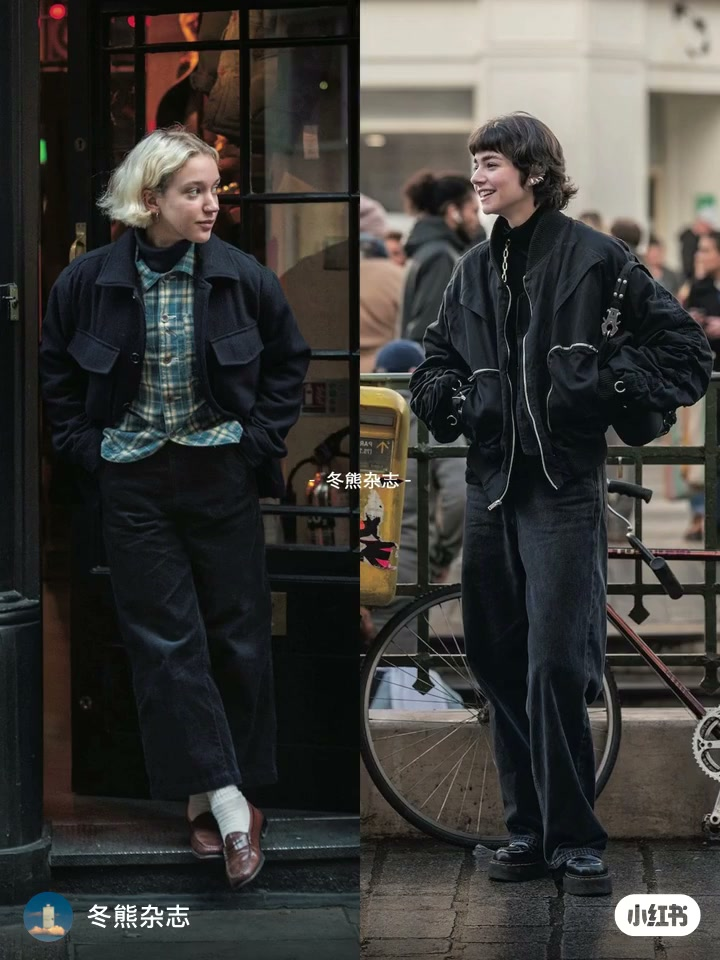
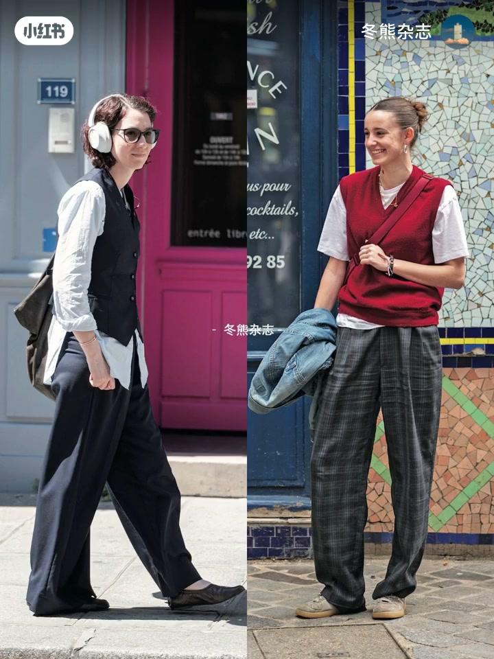
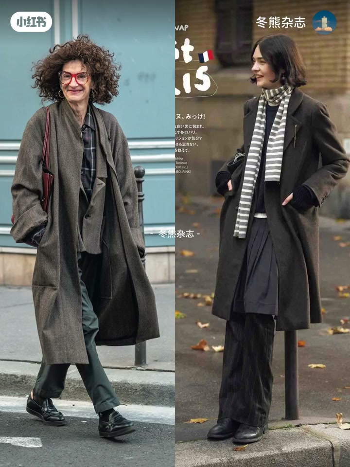
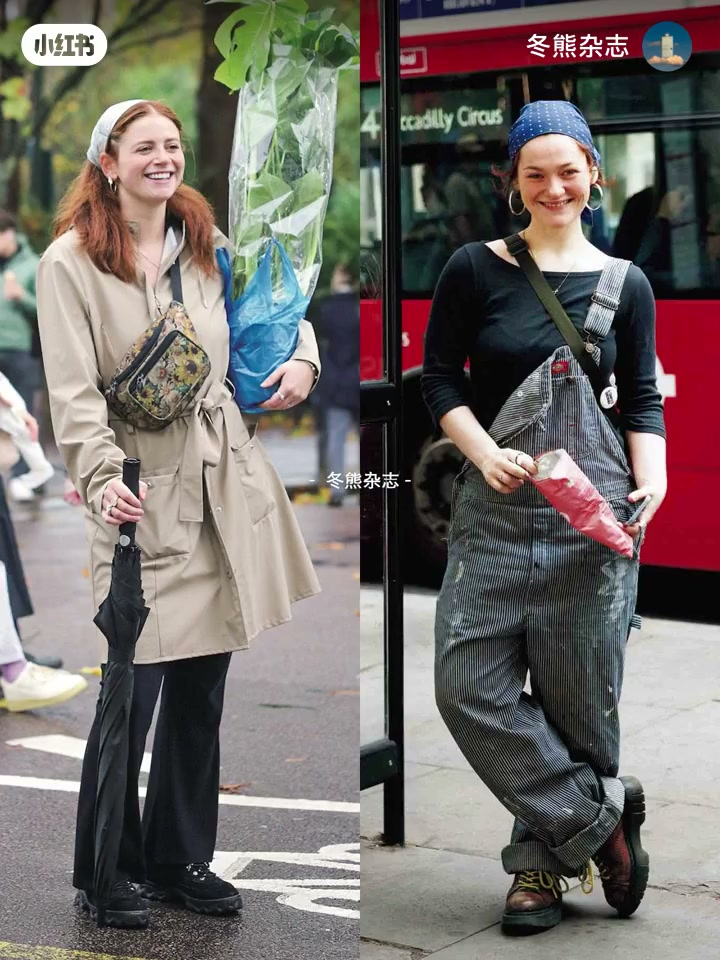

内容要点
本期是冬熊杂志的「审美附录」短片：以《FUDGE》日杂街拍为素材，快速存档一组生活化穿搭灵感。片中几乎没有中文口播，画面以双人对照街拍为主，英文 BGM 铺底；可读信息来自标题、简介与街拍本身——宽松外轮廓、层叠内搭、头巾与实用包袋，强调可走进雨天街道与日常通勤的真实感，而非秀场完成态。
知识结构
开场多组对照：格纹衬衫叠高领+工装外套、飞行员夹克配阔腿裤；白衬衫马甲与红毛衣背心配格子阔腿，耳机眼镜入镜，偏城市日常而非秀场。
继续街拍拼贴：头巾/发带、风衣束腰、印花腰包、雨伞与盆栽等生活道具入镜，穿搭与「正在生活」的动作绑在一起。
背带裤、波点头巾、双层巴士与街头小吃包装同框；收束为可走进湿滑街道的生活化造型档案，而非抽象潮流标签。
FUDGE 式生活化街拍的提示很朴素：用宽松外轮廓和层叠解决季节温差，用头巾、包袋、伞与手中物件把造型钉在真实场景里。审美附录的价值是存档可走的样子，不是背诵品牌清单。
00:00-00:18对照开场：宽廓形工装与马甲层叠
短片以双栏街拍开场：一侧是格纹衬衫叠高领、深色工装外套与阔腿灯芯绒；另一侧是拉链装饰的飞行员夹克配阔腿牛仔裤与厚底鞋。紧接着出现白衬衫+黑色马甲配阔腿西裤、白色耳机与眼镜，以及红毛衣背心+格子阔腿、手拎牛仔外套的轻松造型。
没有旁白逐件讲解，信息靠并置对照完成：同一季节里，工装硬朗与学院层叠可以并存，关键都是宽松外轮廓和可步行的鞋。


00:18-00:36生活道具入镜：头巾、风衣与手中之物
中段街拍把「正在生活」拍进构图：浅色头巾或发带、束腰风衣、印花腰包，手里可以是雨伞、盆栽或购物袋。穿搭不再是静止摆拍，而是下雨天、搬运、赶路时仍然成立的外轮廓。
对观众的实用暗示是：配饰优先服务行动（固定头发、腾出双手、挡雨），风格感是副产品。

00:36-00:54伦敦街角：背带裤与烟火气收束
后段出现波点头巾、条纹背带裤、马丁靴式短靴，背景是红色双层巴士与「Piccadilly Circus」站牌，以及手中粉色纸筒包装——典型的伦敦街头烟火气。
作为审美附录，本片把《FUDGE》街拍压缩成可快速翻阅的生活化样本：宽廓形、层叠、头巾与包袋，加上真实城市背景，比抽象「氛围感」三个字更可执行。

完整转录（18段）
以下文本由 Whisper medium 模型自动转录，可能存在少量识别误差，已尽可能修正。
Don't hit me if you're going out
I can barely leave the house
Mood is always moving south
And you don't know what that's about
Don't hit me if you're going out
I can barely leave the house
Mood is always moving south
And you don't know what that's about
Don't check on me don't sweat I'm fine
Don't expect me to just unwind
It takes a minute and someone
Fuck till I'm finished then say bye
I don't say much
I know going out don't really take much
But fat boys in the city gonna hate us
They impress they daddies with an A plus
I try to put my shoes on and I give up
Homies sent the address to the strip club